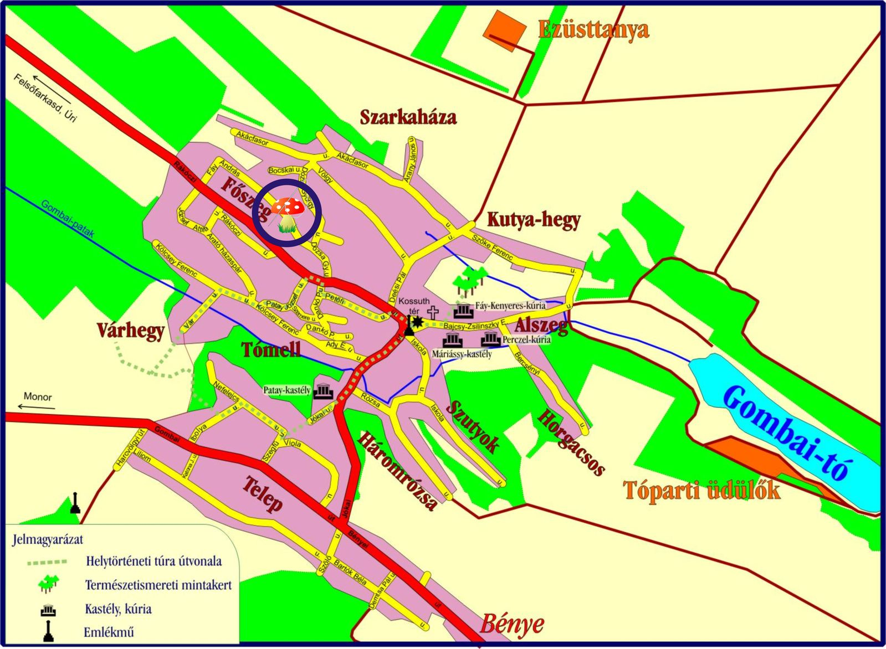

Várjuk megrendelését az alábbi elérhetõségeken:
ajanlat@himzesgomban.hu
Telefon: 06-29-950-352
Mobil: 06-20-555-2036
Balázs Istvánné
E.v. nyilv.sz.:13392098
2217 Gomba, Fáy András u. 7.
GPS: LAT 47°22' 29.14"
LON 19°31' 26.75"
Egy kis segítség a tájékozódáshoz:

Köszönet a térképért a www.gomba.hu községi weboldal készítõjének.